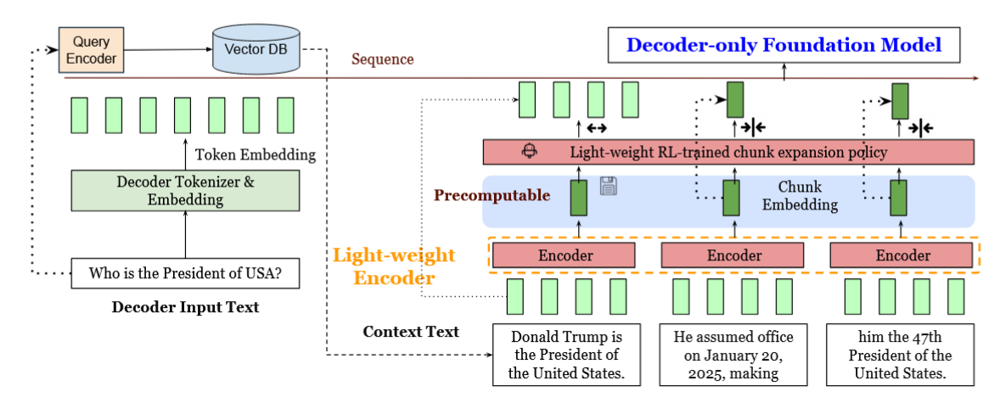

Literature Review: REFRAG — Rethinking RAG-Based Decoding
REFRAG proposes a new decoding framework that rethinks how retrieval-augmented generation (RAG) systems use long contexts. The central idea is to compress the retrieved passages using a dedicated encoder, then feed the resulting chunk embeddings directly into a decoder-only language model (like LLaMA). This effectively replaces thousands of context tokens with a smaller set of semantically rich vectors, greatly reducing latency and memory overhead without sacrificing accuracy. The encoder is trained specifically for this summarization or compression role, and an RL-based policy decides when to expand or compress chunks dynamically.
Key Insights
-
Encoder–Decoder Alignment via Reconstruction The work trains a lightweight encoder (e.g., RoBERTa) to align with a decoder-only LLM through a reconstruction task, where the decoder learns to reconstruct the original token sequence from compressed embeddings. This bridges the representational gap and allows the decoder to “understand” the compressed context.
-
Selective Compression with RL Policy REFRAG introduces a reinforcement learning policy that selectively decides which chunks should remain uncompressed based on perplexity rewards. This selective compression mechanism preserves critical contextual information while maintaining efficiency.
-
Significant Latency and Memory Gains By feeding precomputed chunk embeddings instead of token sequences, REFRAG achieves up to 30.85× faster time-to-first-token and 6.78× higher throughput compared to baseline LLaMA models, all without any perplexity degradation.
-
Task-Specific Encoder Training The paper’s reconstruction-based continual pretraining (CPT) ensures that the encoder learns to produce embeddings that preserve semantic fidelity across chunks. This theoretically supports extending the model to other tasks such as translation or summarization with minor adaptation.
Example

Figure: REFRAG architecture. A lightweight encoder compresses RAG-retrieved passages into chunk embeddings, which are projected into the decoder's token space and selectively expanded during decoding via an RL policy.
Consider a RAG setup where 8 passages (each ~200 tokens) are retrieved to answer a user query. Traditional LLM decoding would process all 1600 context tokens directly. REFRAG, instead, encodes each passage into a single chunk embedding and feeds these to the decoder. The RL policy identifies a few critical passages for full expansion. As a result, the decoder sees an effectively compressed context, reducing prefill latency while preserving semantic relevance.
Ratings
Novelty: 4/5
While the compression and reconstruction approach builds upon existing ideas (like CEPE and compressive transformers), the integration of task-specific encoder alignment and RL-based selective compression provides a practical and elegant contribution to efficient RAG inference.
Clarity: 4/5
The architectural diagrams and empirical results are clear and well-motivated, though the theoretical depth behind the reconstruction alignment could be explored further. The empirical validation, however, is strong and comprehensive across domains.
Personal Perspective
This work’s strength lies in its pragmatic reframing of the RAG decoding problem: instead of treating latency as a general inference bottleneck, it exploits the sparsity and redundancy inherent in retrieved passages. The idea of a reconstruction-trained encoder projecting semantically compressed embeddings into a decoder’s token space is technically compelling and potentially extensible to other modalities. However, the theoretical novelty is moderate as the underlying mechanisms (encoder–decoder projection, selective attention) are incremental extensions of known paradigms. A natural next step would be to investigate whether the same compression-reconstruction pipeline can be generalized to other tasks such as translation, dialogue memory summarization, or long-term agentic reasoning, where efficient representation transfer could be important.
Enjoy Reading This Article?
Here are some more articles you might like to read next: